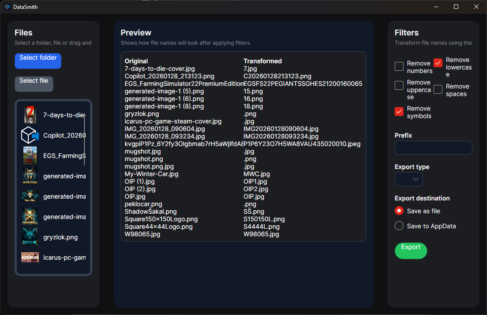
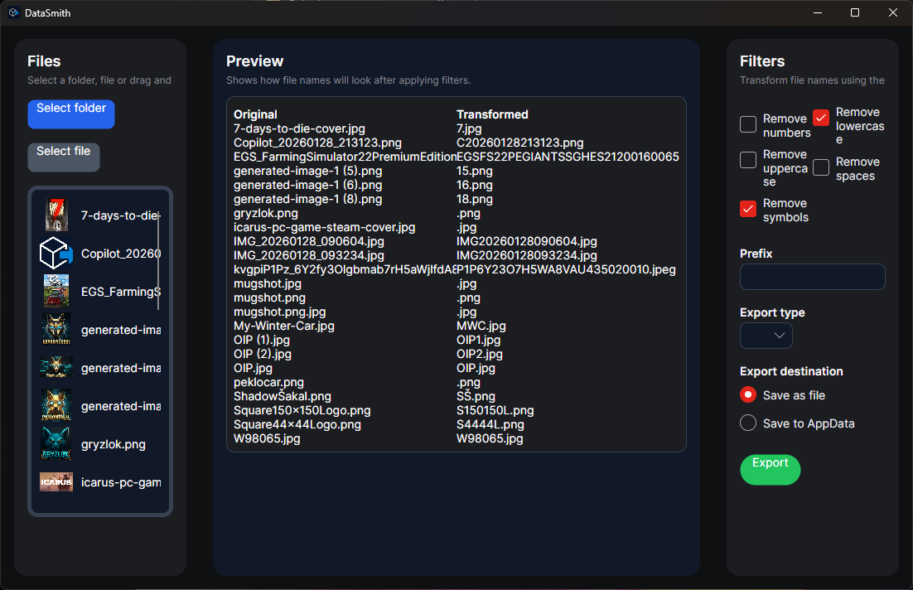
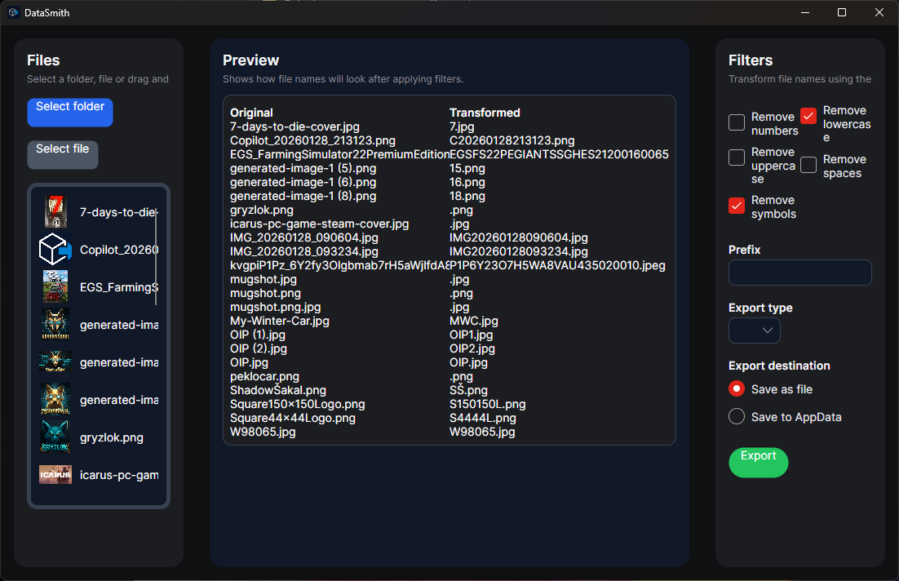

Screenshots
 

Professional data export tool
Download InstallerDataSmith2 is a lightweight and efficient tool for data export. Designed for users who want a clean, fast and reliable workflow. Built with Avalonia UI and .NET 8.

You can find the development roadmap in the repository: ROADMAP
If you would like to support the development of DataSmith2, you can sponsor me on GitHub.
Sponsor on GitHub